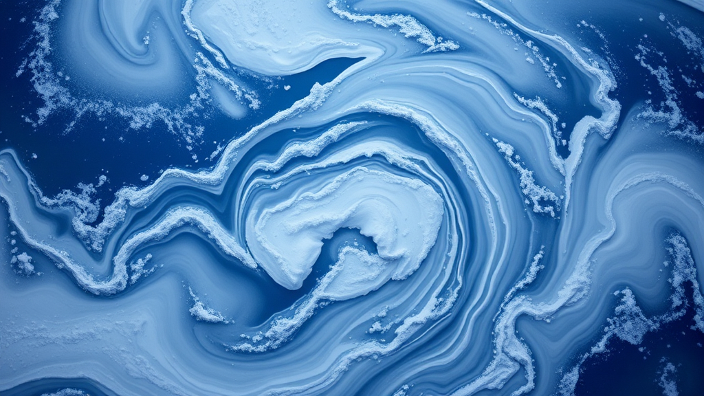
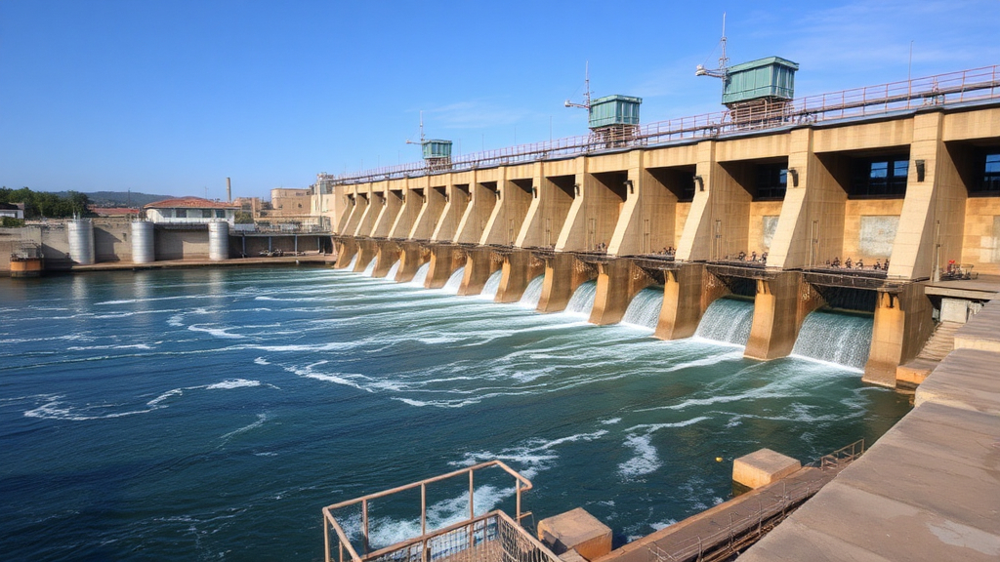

What is geology?
GEOLOGY is the study of the structure, evolution and dynamics of the Earth and its natural mineral and energy resources.
What are the natural resources?
NATURAL RESOURCES on Earth are materials and substances that occur naturally and can be used for economic gain or to support life. They are essential for human survival, economic activities, and the functioning of ecosystems.
Types of natural resources on Earth
Natural resources are classified into two main types:
- RENEWABLE RESOURCES:
Solar Energy
Wind Energy
Water (Hydropower)
Biomass
Forests
- NON-RENEWABLE RESOURCES:
Minerals
Nuclear Energy Resources
Fossil Fuels

The problem of the excessive exploitation
EXCESSIVE EXPLOITATION refers to the overuse or unsustainable extraction of Earth's natural resources, often at a rate faster than they can naturally replenish. This practice leads to environmental degradation, depletion of critical ecosystems, and long-term harm to human societies. Excessive exploitation is driven by industrialization, population growth, economic development, and a global demand for resources such as minerals, fossil fuels, forests, and water.
Ways to minimalize excessive exploitation
To decrease production we can:
- 1. Promote Sustainable Resource Management
- 2. Implement Stronger Environmental Policies and Regulations
- 3. Develop and Deploy Green Technologies
- 4. Create Public Awareness Campaigns
- 5. Support Local and Indigenous Resource Management
What is recycling?
Recycling is the process of collecting and processing materials that would otherwise be discarded as waste and turning them into new products. By doing so, recycling helps reduce the consumption of raw materials, save energy, decrease pollution, and conserve natural resources.
Reflective questions:
- 1. How does my daily energy consumption contribute to climate change, and what steps can I take to reduce it?
- 2. What role does deforestation play in climate change, and what can I do to support forest conservation?
- 3. What everyday habits contribute to water waste, and how can I reduce my water footprint?
- 4. How can I reduce my transportation-related carbon emissions?
- 5. How prepared is my community for extreme weather events like floods, heatwaves, and storms?
Personal and Community Challenges:
- 1. Track your personal or household use of natural resources, such as energy, water, and materials, for one week. Identify areas where you can reduce consumption.
- 2. Join or start a recycling initiative in your community. Track how much waste you divert from landfills by recycling materials like plastic, glass, and paper.
- 3. Challenge yourself to reduce your plastic consumption by switching to reusable items such as metal straws, cloth bags, and refillable water bottles for one month.
- 4. Commit to reducing your household energy use by 10%. Implement energy-saving practices like turning off lights when not in use, using energy-efficient appliances, or unplugging devices.
- 5. Challenge yourself to reduce water waste by taking shorter showers, fixing leaks, and using water-saving appliances. Reflect on how reducing water waste helps conserve this essential resource.
Community and Global Engagement Challenges::
- 1. Get involved with or start a local group that advocates for the protection and sustainable use of natural resources. Organize events to raise awareness of the importance of SDG 12.
- 2. Participate in or organize a project focused on conserving natural resources, such as a forest restoration, wildlife protection, or water conservation initiative.
- 3. Work with local schools or community centers to create a recycling program that reduces waste and promotes responsible consumption.
- 4. Collaborate with local food banks, grocery stores, or restaurants to reduce food waste. Organize food drives or redistribute surplus food to those in need.
- 5. Get involved with global campaigns that address the unequal distribution of natural resources. Reflect on how ensuring equitable access to resources can reduce global poverty and environmental degradation.
Interactive Quiz
Test your knowledge about geology, recycling and natural resources!